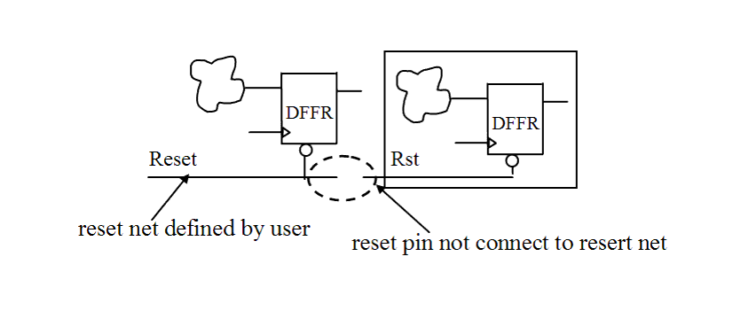

| Description | This rule fires when Leda detects a reset pin that is not connected to a reset net in the design. Pins that are not connected to nets may be taken as having different power polarities by different tools. Connecting reset pins to reset nets can prevent sequence errors and improve reset tree analysis. |
| Policy | DESIGN |
| Ruleset | RESETS |
| Language | VHDL/Verilog |
| Type | Hardware |
| Severity | Error |
This is an example of invalid Verilog code, followed by a circuit diagram that illustrates the problem:
module ntl_rst14_top ;
input Reset; // a reset pin at top-level
...
//DFFR - flip-flop with reset, CD is the reset pin
DFFR U0(.D(net_01), .CP(Clock), .CD(Reset) .Q(net_02))
// OK -- reset is connected
Sub_block U1(.Clock(Clock_ext), .Rst( ), .Din(Din_ext),
.Dout(Dout_ext));
// NTL_RST14 fires -- reset pin not connected to reset net Rst
...
endmodule
module Sub_block (Clock, Rst, Din, Dout);
input Clock, Rst, Din;
output Dout;
reg Dout;
always @(posedge Clock)
begin
if (!Rst)
Dout <= 0;
else Dout <= Din;
end
endmodule
